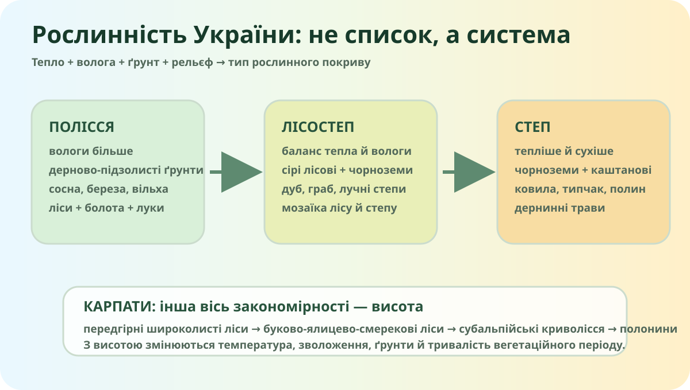

Чому лісів більше не там, де «просто родючіше»?
Уявіть дві території: волога прохолодніша північ і тепліший посушливий південь. Де природний деревний покрив має більше шансів бути суцільним?

Локальна навчальна схема. Вона пояснює механізм, а не замінює карту рослинності.
Зберіть причинний ланцюг
Змініть співвідношення тепла й вологи й подивіться, як змінюється очікуваний природний покрив.
Модельний результат: мозаїка лісу й відкритої трав’яної рослинності
Це дидактична модель: реальна рослинність залежить також від ґрунтів, рельєфу, висоти, пожеж, рубок, землеробства й історії використання території.
Полісся
Вологи більше, піщані та дерново-підзолисті ґрунти, значна роль соснових, мішаних, вільшнякових лісів, боліт і луків.
Лісостеп
Перехідна мозаїка: широколисті ліси чергуються з ділянками лучно-степової рослинності; значна частина території давно освоєна.
Степ
Тепла багато, але дефіцит вологи сильніший. Природна рослинність — переважно дернинні злаки й посухостійкі трави.
Ліси України: перевіряємо інтуїцію числами
За даними Державного агентства лісових ресурсів України, площа лісових ділянок становить близько 10,4 млн га, а лісистість країни — 15,9%. Ліси розміщені нерівномірно: найбільше їх зосереджено в Поліссі та Українських Карпатах.
Серед поширених деревних порід — сосна, дуб, бук, ялина, береза, вільха, ясен, граб і ялиця.
Питання, яке відсікає зубріння
Чому лісистість Карпат і Полісся вища, ніж у степовій зоні, хоча чорноземи степу дуже родючі?
Побачте «зелень» не очима, а сенсором
Sentinel-2 реєструє відбиття поверхні у видимих та інфрачервоних діапазонах. Вегетаційні індекси, зокрема NDVI, допомагають оцінювати активність зеленого покриву, але не називають вид рослини «за одним кольором».
- Відкрийте Україну.
- Порівняйте Полісся, Карпати та південний степ.
- Знайдіть ділянку з високою «зеленістю» і поясніть: це обов’язково природний ліс чи може бути поле/сад?
OpenStreetMap — базова реальна карта для просторової орієнтації. Рослинність перевіряємо окремими тематичними шарами.
Що треба винести з уроку
На рівнинах із півночі на південь змінюється співвідношення тепла й вологи, тому змінюються ґрунти та природна рослинність.
У Карпатах з висотою зменшується температура, змінюється зволоження й тривалість вегетаційного періоду — тому змінюються рослинні пояси.
Сучасна карта рослинності — це не «чиста природа». Розорювання, рубки, насадження, пожежі, урбанізація й відновлення сильно змінюють покрив.
20 секунд: як Sentinel-2 «бачить» рослинність
ESA: Monitoring our changing land. Коротка анімація про використання Sentinel-2 для моніторингу рослинності та земного покриву.

Реальний лісовий ландшафт України, Wikimedia Commons.
Пастка
Фото красивого лісу доводить, що «Україна лісова країна»?
Чому рослинність України закономірно змінюється в просторі?
Мікродослідження «Зелена пляма поруч»
- Знайдіть на супутниковій карті зелену ділянку у своєму населеному пункті або районі.
- Визначте, що це: парк, лісосмуга, сад, поле, заплава чи інший тип покриву.
- Запишіть 3 докази й один чинник, який пояснює цю рослинність.
Підручник: §33. Опрацювати матеріал і додати 1 скриншот карти без приватної адреси.
Електронний підручник